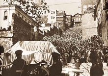

About Illness and Death
During 1937, indications that Atatürk's health was worsening started to appear. In early 1938, while he was on a trip to Yalova, he suffered from a serious illness. He went to Istanbul for treatment, where he was diagnosed with cirrhosis of the liver. During his stay in Istanbul, he made an effort to keep up with his regular lifestyle for a while. He died on 10 November 1938, at the age of 57, in the Dolmabahçe Palace, where he spent his last days. The clock in the bedroom where he died is still set to the time of his death, 9:05 in the morning.
Atatürk's funeral called forth both sorrow and pride in Turkey, and 17 countries sent special representatives, while nine contributed armed detachments to the cortège. Mustafa Kemal's remains were originally laid to rest in the Ethnography Museum of Ankara, and transferred on 10 November 1953, 15 years after his death in a 42-ton sarcophagus, to a mausoleum that overlooks Ankara, Anıtkabir.
In his will, Atatürk donated all of his possessions to the Republican People's Party, providing that the yearly interest of his funds would be used to look after his sister Makbule and his adopted children, and fund the higher education of the children of İsmet İnönü. The remainder of this yearly interest was willed to the Turkish Language Association and the Turkish Historical Society.